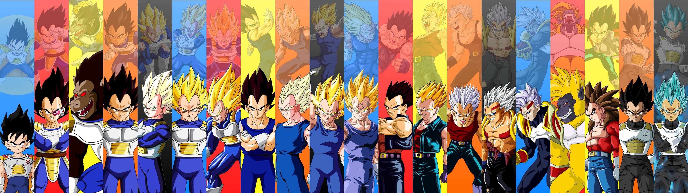
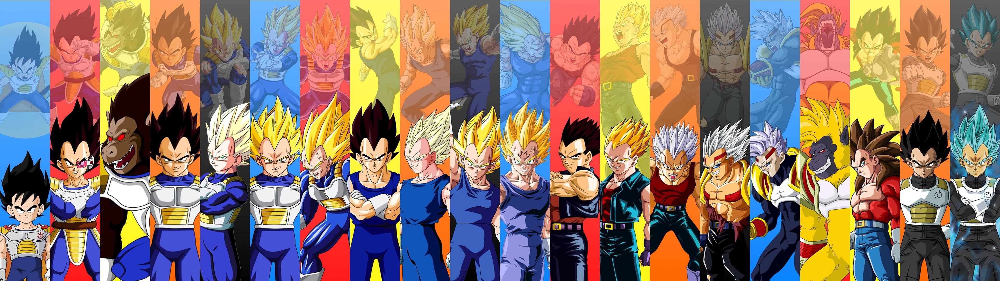
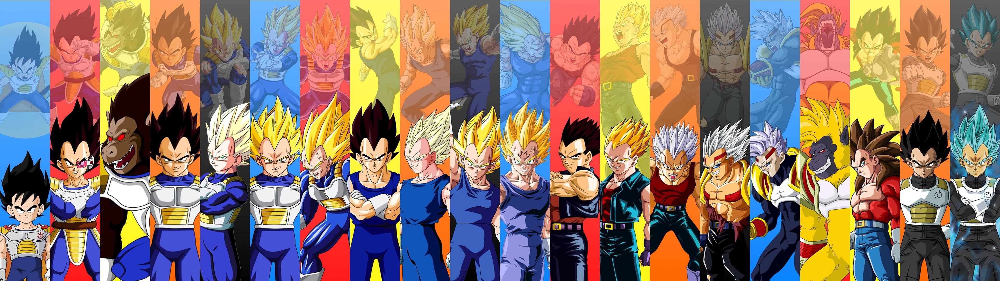
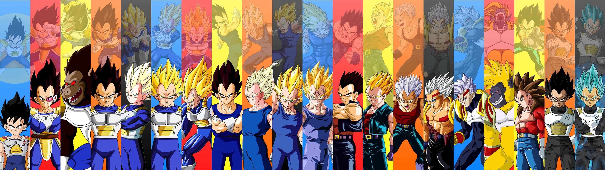

 

My website is based on the Japanese franchise of Dragon Ball which isnt just a movie series but also a tv series and comic series. The page has a simple layout which is made from the html and css with extra features to allow easy manovering around the website. I used my own knowledge plus some extra help from "w3schools" to make this website successful by cooperating my html, css and javascript knowledge with "w3schools". I used javascript to create the slideshow at the top of each page to entice the user to be more interested in the webpage and i also used javascript to have thew time and date shown on every page.
For the security of the website, if i was to upload the website online i would consider SFTP and SSL as SFTP allows me to upload new files and programs without having to worry about someone hacking and taking the code during the transfer and SSL to secure the path between the browser and web server. I created back ups of my website files just incase someone was to be able to hack the servers and delete my webpages i could secure the server again and re upload my webpage. The servers should be frequently maintained to prevent any attacks or atleast limit them.
In the future for this webpage i would add in more information and history details about the dragon ball franchise and also have clips and information on the tv series and comics. The theories page and favourite page would be more detailed as the theories page would be updated regulary like a blog about my thoughts and theories about the shows and movies and the favourite page would update every now and then about my opinion on characters. I would allow users to create a login so they can save different files, information and have notifications when the website updates, there will also be a poll for the dragon ball characters where users can vote for their favourite characters.
each number is for a different page on the tabs that are used to manouver around each page. 1 = index page = Home. 2 = History page = History. 3 = Movies page = Movies. 4 = Characters page = Characters. 5 = Voice Actors page = Voice Actors. 6 = Theories page = Theories. 7 = Favourite Characters page = Favourite.
| Breakdown | pages | Additional Informtation |
|---|---|---|
| Index Page | ||
| Text | 1,2,3,4,5,6,7 | Text is in the head of each page as a h1 and h2. There is also text inside a table on page 2. And inside the timeline boxes on page 3. Also general text on page 4, 5, 6 and 7. |
| Images | 1,2,3,4,5,6,7 | Images in the header of the page as a slide show. Single images are located on pages 4, 5, 6 and 7. |
| Video | 1,3, | Youtube video on home page, page 1. Also in the timeline on page 3. |
| Audio | 4 | Four mp3 sounds on this page. |
| table | 2 | table contains text of information. |
| List | 1,2,3,4,5,6,7 | The taskbar on every page is a list, this allows easy manovering throught the pages of the website. |
| form | 7 | the form has radio buttons to select their favourite character that is provided. Also inside the same form section theres a text input for any other characters. |
| Css elements used for structure | 1,2,3,4,5,6,7 | All pages have cass that designs the taskbar to give an easier to read and simple looking design. Page 2 has css to design the table. Page 3 has css to design the timetable layout. |
| Pages that have external css, minimum of 3 properties | 1,2,3,4,5,6,7 | The external css file adjusts the font size, color and text align for header 1 and 2. The external file also adjusts the color of the background. |
| atleast 1 internal css with 2 elements | 3 | On this page the css has several elements to layout the design of the timeline. |
| Javascript and other features | 1,2,3,4,5,6,7 | There is javascript on every page as this creates the loop design for the header slideshow. Also each page has javascript to show the date and time. |